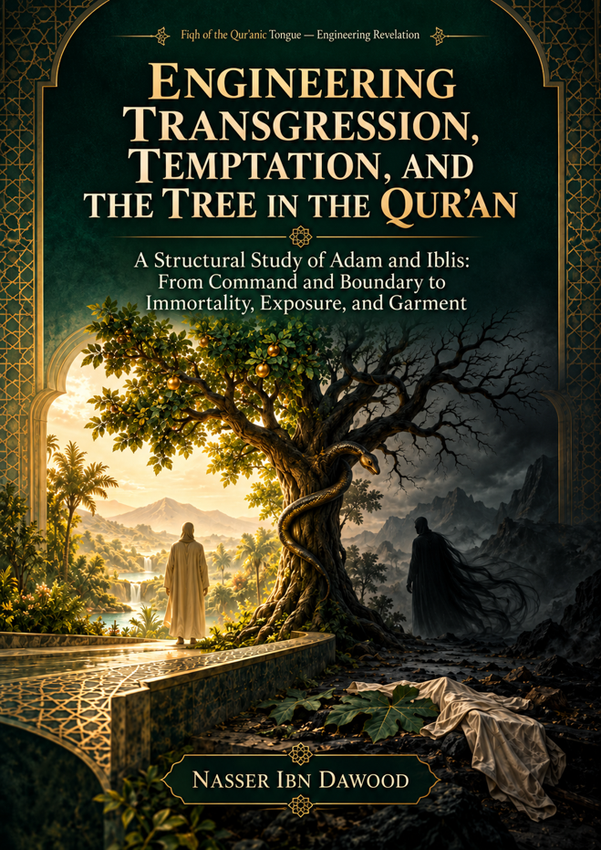

113. Engineering Transgression, Temptation, and the Tree in the Qur'an

A structural study of Adam and Iblis, from command and boundary to immortality, exposure, and garment, distinguishing textual evidence from hypotheses.
قراءة PDF داخل الموقع / Read the PDF on this website
جارٍ تجهيز القارئ… / Preparing the reader…
Book Summary, Table of Contents & Excerpt
ENGINEERING TRANSGRESSION, TEMPTATION, AND THE TREE IN THE QUR'AN
A Structural Study of Adam and Iblis: From Command and Boundary to Immortality, Exposure, and Garment
Nasser Ibn Dawood
Fiqh of the Qur'anic Tongue — Engineering Revelation
Condensed Conceptual English Edition — 2026
This edition is a condensed conceptual adaptation of the Arabic volume. It preserves the argument, methodological safeguards, claim statuses, and open questions, while omitting most repetitive tables and audit detail.
MAIN TEXT: COMPLETE | FINAL CLAIM SEALING: LOCKED
Translator's Note — The Bridge of Meaning
This English edition is not a word-for-word translation. It is an extraction of the book's conceptual architecture for readers who do not read Arabic. The Arabic original is a research volume built through successive corpus audits, resistant-resource tests, reverse tests, and controlled drafting passes. A literal translation of every table, register, and repeated status line would reproduce the bulk of the Arabic edition without improving conceptual access. This condensed edition therefore retains the argument and the epistemic limits, while compressing the audit trail.
Three rules govern this adaptation. First, Qur'anic wording remains the governing evidence; earlier books by the author are treated only as sources of questions, models, or hypotheses. Second, statements spoken by Iblis are treated as speaker-limited: they are evidence that the statement occurs in the narrative, not automatic confirmation that its content is objectively true. Third, the edition preserves the research statuses used in the Arabic original: OPEN, NOT ESTABLISHED, RESISTED, SUPPORTED, STRONGLY SUPPORTED, NEAR-CLOSURE, and CLOSED.
Qur'anic references are given by surah name and verse number. Passages are generally paraphrased rather than reproduced at length. The aim is to make the structure of the inquiry portable without turning a condensed edition into a substitute for the Arabic research record.
Contents
1. Executive Summary
2. How to Read This Book
3. Methodological Charter: QCROS, MATHANI-NET, and Claim Discipline
4. The Baseline Narrative: Command, Boundary, Responsibility
5. The Architecture of Temptation: Whispering, Reframing, Immortality, and Trust
6. The Tree: Function Before Identity
7. Exposure, Saw'ah, Garment, and Covering
8. Transgression, Ghayy, Repentance, and Restoration
9. The General Qur'anic Architecture of Temptation
10. Synthesis: Candidate Laws, Resistant Models, and Open Questions
11. Compact Reader's Audit Card and Status Glossary
1. Executive Summary
The story of Adam and Iblis is often approached as though its major meanings were already known: the tree is assigned an identity, nakedness is given a fixed interpretation, temptation is reduced to a single psychological mechanism, and the different Qur'anic tellings are assembled into one continuous chronology. This book begins elsewhere. It treats the story as a structured textual field whose relations must be established before its symbols are defined.
The central question is not, 'What is the tree?' but, 'What does the Qur'anic text actually establish about the tree, the boundary, the temptation, the act, the exposure, and the restoration?' The study therefore moves from text to observation, from observation to relation, from relation to hypothesis, from hypothesis to resistant testing, and only then to a result or model. The book's strongest conclusions are functional rather than ontological.
Within the Adam narrative, the tree is firmly established as the referent of a known prohibition. Iblis then reframes the tree through promised benefit: angelic status or lasting existence in al-A'raf, and the 'tree of immortality' with an imperishable dominion in Taha. The text strongly supports this benefit-reframing as a feature of the temptation, but it does not validate the promised benefit as an objective property of the tree. 'Tree of immortality' is therefore speaker-limited, not a divine definition of the tree.
The study also distinguishes the boundary from the later act. 'Do not approach this tree' cannot be reduced to purely spatial distance, because other Qur'anic 'do not approach' formulations regulate entry into prohibited domains. At the same time, approach is not identical to tasting or eating. The local sequence between tasting/eating and the exposure of saw'ah is textually secure, but the material or biological mechanism is not established.
The saw'ah corpus is small and highly structured. All seven occurrences of the lexeme lie in a covering/exposure network. This supports a strong functional nucleus: saw'ah is a referent whose exposure is textually linked to concealment, covering, or attempted covering. Yet its ontological identity remains open. The claim that saw'ah means exclusively a sexual organ is resisted by al-Ma'idah 31, where the term occurs in the burial/covering context of the murdered brother.
Likewise, libas cannot be reduced to physical clothing. The noun occurs in several functional modes: mutual relational covering between spouses, direct covering of saw'at, the 'garment of taqwa,' the 'garment' of hunger and fear, night as a garment, and explicitly material silk. This distribution closes the observation that libas is multi-modal, while the exact material nature of Adam's initial garment remains open.
A major conclusion concerns agency. Temptation influences, reframes, promises, beautifies, deceives, calls, and may exert forms of pressure; yet the Qur'anic architecture does not support a universal model of coercive control. Response participation is strongly supported. Adam is therefore neither a passive victim without agency nor is Iblis a neutral catalyst of learning or evolution. The two trajectories are structurally asymmetrical.